This set explores mirror girl blurry photo through modern aesthetics and moody tone under window light. Compositions use leading lines with minimal set, keeping focus clear and tidy. Details like sporty styling and balanced colors make browsing easy.
Browse mirror images. Page 1 of curated mirror-style portrait collection.
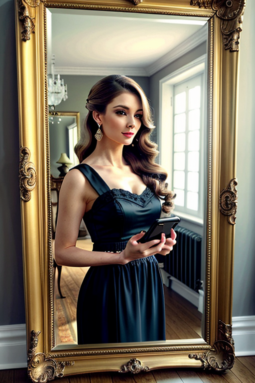 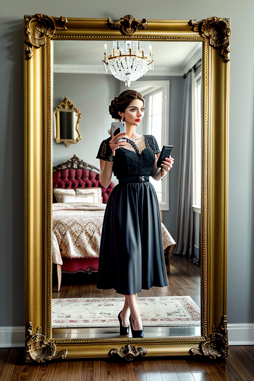 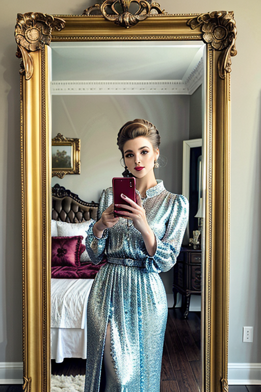 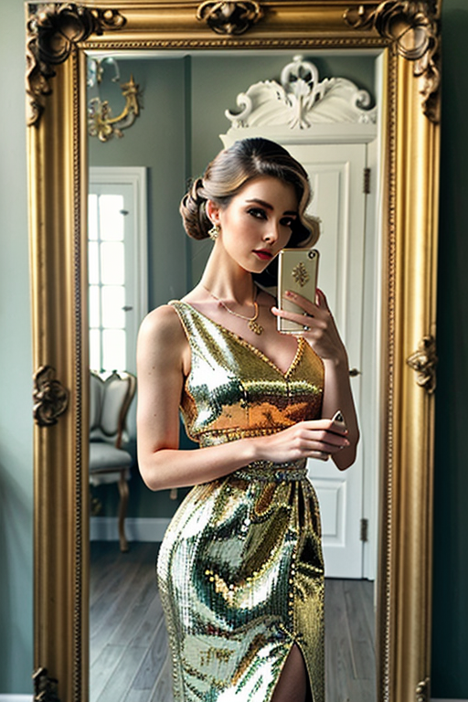 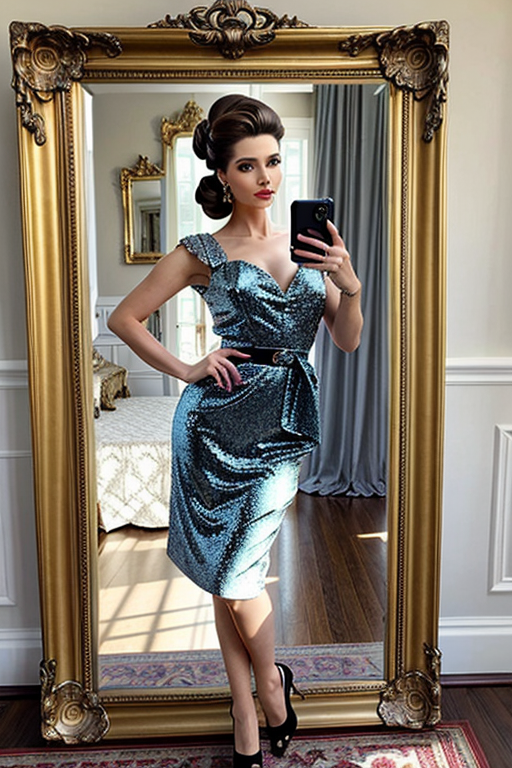 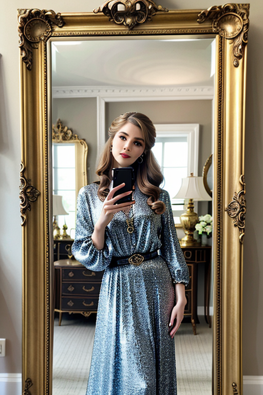 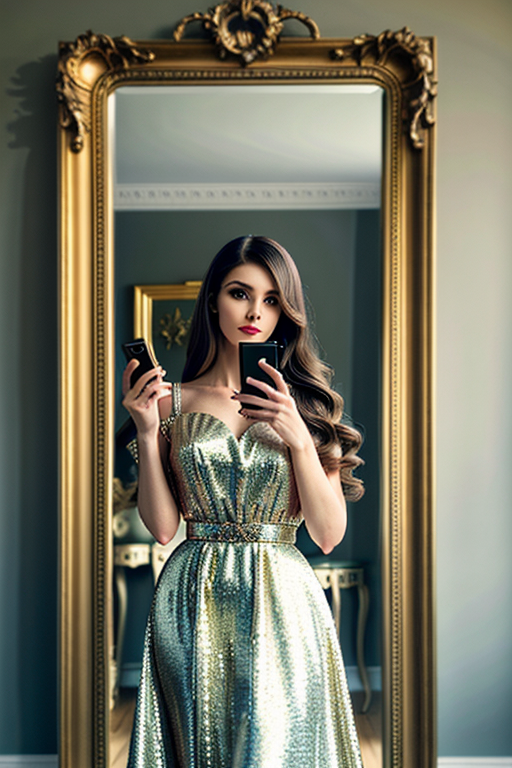 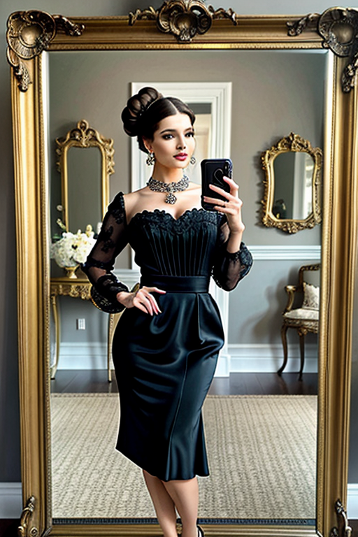 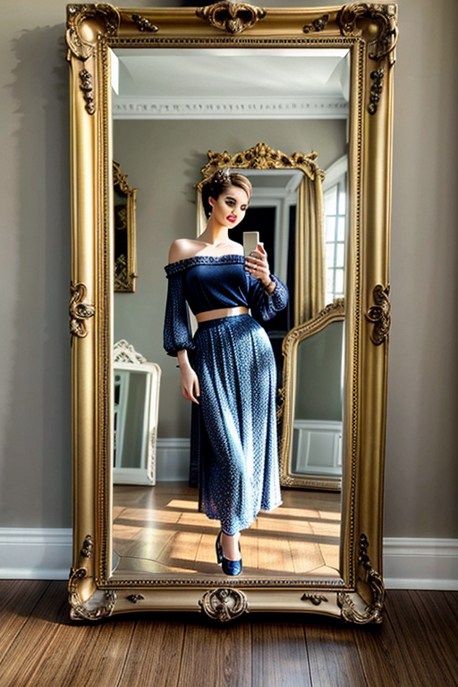 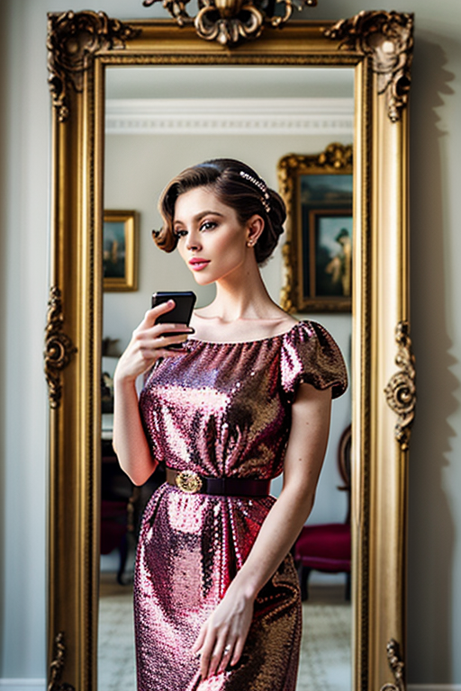
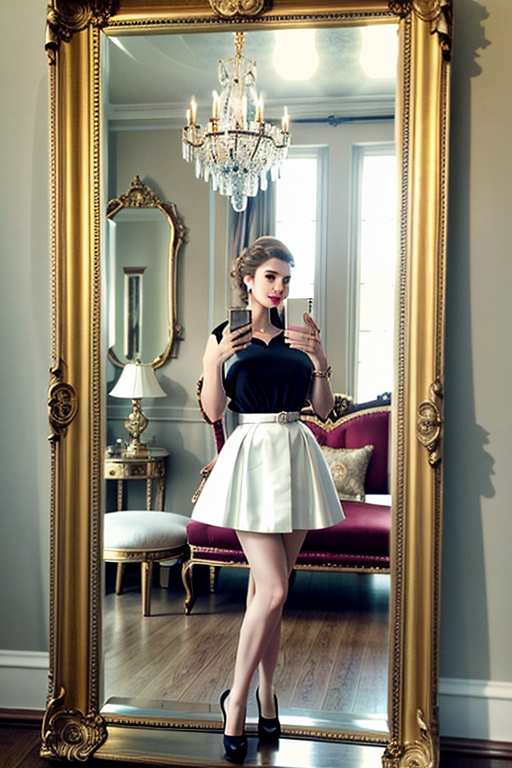
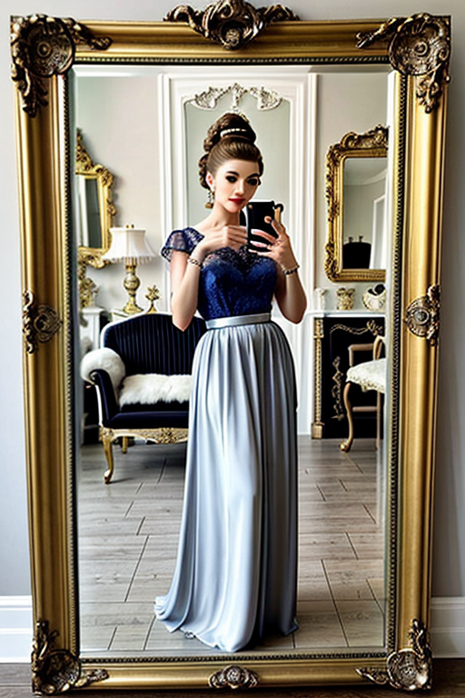
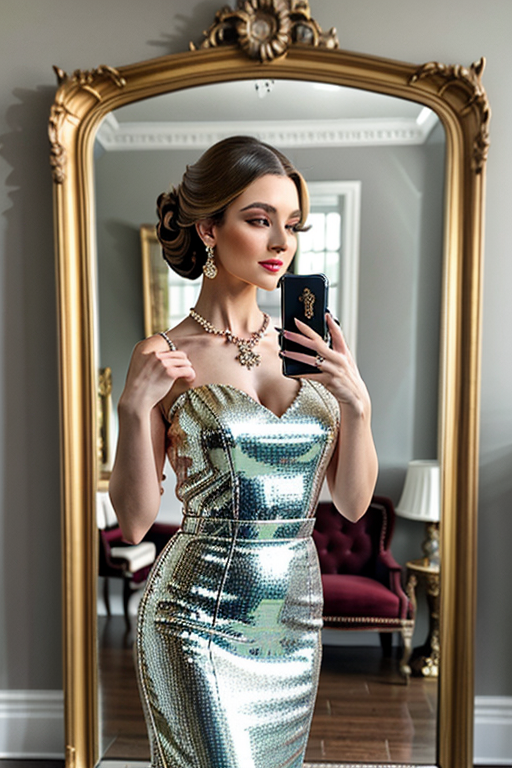
 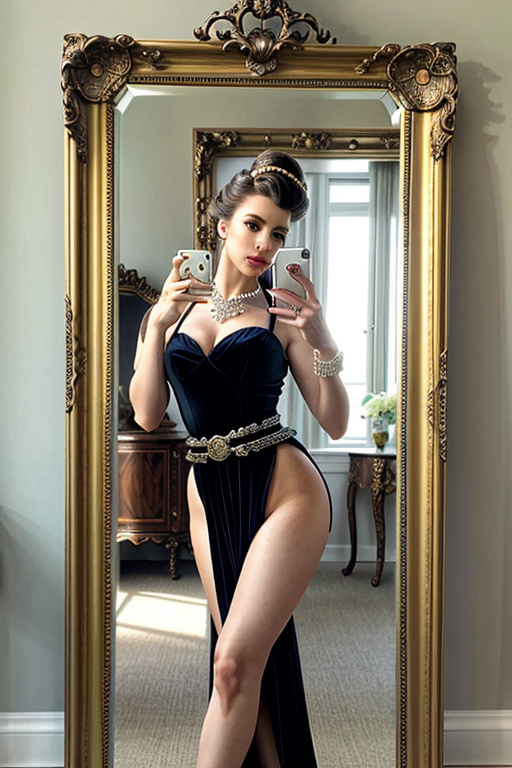
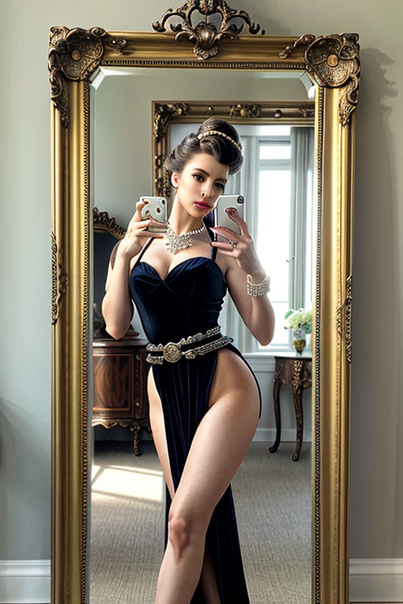
 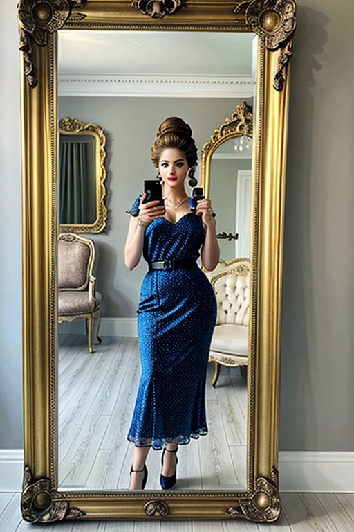
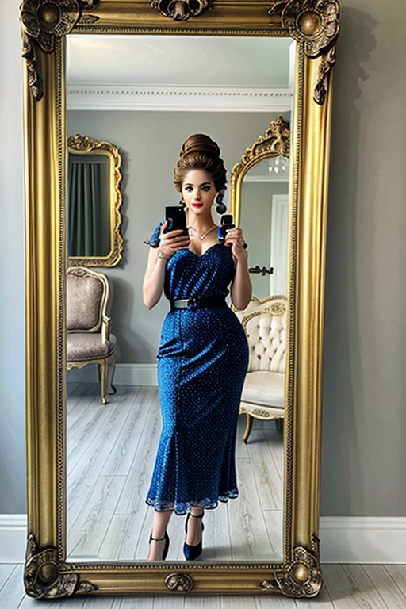

This page explores page1 with a practical focus on visual detail and browsing experience. The image aims to deliver a straightforward visual impression while keeping the file lightweight. A brief explanation clarifies the subject and lighting so visitors can quickly decide where to go next. The image aims to deliver a straightforward visual impression while keeping the file lightweight. A brief explanation clarifies the subject and lighting so visitors can quickly decide where to go next. Internal navigation leads to related items with comparable tone or composition. This reduces bounce and supports exploration within the same theme. The image aims to deliver a straightforward visual impression while keeping the file lightweight. A brief explanation clarifies the subject and lighting so visitors can quickly decide where to go next. If you are comparing alternatives, keep an eye on subtle differences in framing, contrast, and color balance.